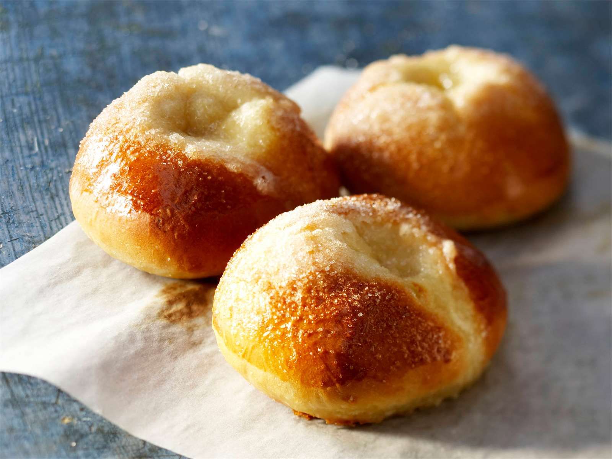

MAKEAT LEIVONNAISET:
PULLATAIKINA:

AINEKSET:
- 2 1/2 dl maitoa tai vettä
- 25g hiivaa (1 pussi)
- 1/2 tl suolaa
- (1-2 tl kardemummaa)
- 1 muna
- 3/4-1 dl sokeria
- noin 7 dl jauhoja
- 75 g margariinia tai 1/2 dl öljyä
OHJEET:
- Lietä hiiva kädenlämpöiseen nesteeseen. Lisää muna, sokeri, mausteet ja ylipuolet jauhoista haarukkavatkaimella sekoittaen.
- Lisää jauhoja vähitellen. Alusta taikinaa koko ajan toisella kädellä.
- Lisää huoneenlämpöinen rasva. Jatka alustamista, kunnes taikina irtoaa kulhon reinoista ja kädestä.
- Kohota taikina leivinliinalla peitettynä noin kaksinkertaiseksi.
- Alusta kohottunutta taikinaa, kunnes se on jälleen kiinteää.
PULLIEN VALMISTUS:
- Valmista mieleisiäsi pullia esim. voisilmäpullia tai korvapuusteja.
- Kohota pullia pellillä leivinliinalla peitettynä.
- Pane uuni kuumenemaan 225 °C:seen
- Voitele pullat kananmunalla tai voilla ennen paistamista ja koristele halutessasi esimerkiksi raesokerilla.
- Paista pullia uunin keskitasossa noin 10 minuttia.
SOKERIKAKKU:

AINEKSET:
- 2 munaa
- sokeria tilavuudeltaan yhtä paljon kuin munia
- jauhoha tilavuudeltaan yhtä paljon kuin munia
- (1 tl leivinjauhetta)
TAIKINA OHJE:
- Pane uuni kuumenemaan 200 °C:seen. Voitele ja jauhota vuoka.
- Vatkaa munat ja sokeri vaahdoksi. Vaahto on valmista, kun se on vaaleaa ja kuohkeaa.
- Sekoita leivinjauhe jauhoihin ja lisää jauhot siivilän läpi haarukkavatkaimella sekoittaen.
- Kaada taikina vuokaan ja paista uunin alaosassa laakeassa vuoassa noin 15 min, halkaisijaltaan pienessä vuoassa 25 minuuttia.
- Kumoa kakku vähän jäähtyneenä.
TÄYTEKAKKU:
- Sokerikakkupohja
- Kostukkeeksi 1/2-1 dl vaaleaa mehua
- Täyte oman maun mukaan esim. hilloa ja 1 dl kermavaahtoa
- Kuorrutukseen 2 dl vaahdotettua kermaa + vapaavalintaiset koristeet tai kuorrutus esim. karkkia, marjoja tai kinuskikuorrutus.
KINUSKIKUORRUTUS:
AINEKSET:
- 1 dl kermaa
- 1/2 dl sokeria
- 1/2 dl fariinisokeria
- 1/2 tl voita
OHJEET:
- Keitä kermaa ja sokeria haarukkavatkaimella sekoittaen, kunnes seos sakenee. Kinuski on valmista, kun tippa kinuskia jähmettyy pehmeäksi palloksi kylmällä lautasella.
- Lisää voi ja kaada kinuskikuorrutus kakunpäälle.
VAALEAT MOKKAPALAT:
AINEKSET:
POHJA:
- 2 munaa
- 2 dl sokeria
- 1 dl maitoa
- 100 g margariinia tai voita
- 3 dl jauhoja
- 1 1/2 tl leivinjauhetta
- 2 tl vaniljasokeria
KUORRUTUS:
- 40 g sulatettua rasvaa
- noin 2 rkl kylmää kahvia
- noin 3 dl tomusokeria
- 1 1/2 rkl kaakaojauhetta
- 1 1/2 rkl vaniljasokeria
OHJEET:
- Pane uuni kuumenemaan 200 °C:seen. Voitele suorakaiteenmuotoinen vuoka.
- Vatkaa munat ja sokeri vaahdoksi.
- Lisää maito ja sulatettu, kädenlämpöiseksi jehdytetty rasva.
- Sekoita leivinjauhe ja vaniljasokeri jauhoihin ja lisää jauhot taikinaan.
- Levitä taikina vuokaan. Paista 10-15 minuuttia.
- Valmista kuorrutus: Sekoita rasva ja kahvi kulhossa. Siivilöi joukkoon tomusokeri, kaakaojauhe ja vaniljasokeri. Sekoita tasaiseksi.
- Levitä kuorrutus kypsän, hieman jäähtyneen pohjan päälle.
- Koristele halutessasi strösseleillä, nonparelleilla tai kookoshiutaleilla.
- Leikkaa halutun kokoisiksi ja mallisiksi annospaloiksi.
VINKKI:
- Suklaapalat: korvaa 2 rkl vehnäjauhoista kaakaojauheella!
- Kaksinkertaisesta taikina-annoksesta saat pellillisen mokkapaloja.